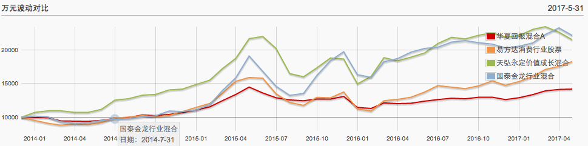

基金定投计划
- Update: 2018-04-15
常用信息
- 基金定投计算器:
- 晨星网基金对比:http://cn.morningstar.com/fundcompare/compare.aspx
- 上海证交所：http://www.sse.com.cn
- 中证指数公司：http://www.csindex.com.cn/
- 泸深300、上证50成份股:http://data.eastmoney.com/other/index/hs300.html
- 恒生指数成份股:http://www.aastocks.com/sc/stocks/market/index/hk-index-con.aspx
- 雪球：https://xueqiu.com/
- 亿牛网(股票历史PE/PB查询):https://eniu.com/
- 理杏仁:https://www.lixinger.com
复利计算
- 十年平均复利率计算中，1.0/10表示：1年/10年
- 投入10W十年、年化利率15%、十年一牛100%，本金+收益：10W * (1.15**10 * 2 ) = 80.91W
- 货币基金:4%，10年1.48倍
| 收益项 | 收益率 | 计算方式 |
|---|---|---|
| 年化收益 | 4% | |
| 十年总收益率 | 48.02% | (1+0.04)**10 - 1 = 0.4802 |
| 十年平均复利率 | 4% | (1+0.4802)**(1.0/10)-1 = 0.03999 |
| 10W十年本利合计 | 10 * (1+0.04)**10 = 14.8W |
- 权益类收益:年化增涨15%，10年4倍
| 收益项 | 收益率 | 计算方式 |
|---|---|---|
| 业绩内生式增涨 | 15% | |
| 十年总收益率 | 304.56% | 1.15**10 - 1 = 3.0455577 |
| 十年平均复利率 | 15% | (1+3.0455577)**(1.0/10)-1 = 0.1499 |
| 10W十年本利合计 | 10 * (1+0.15)**10 = 40.455577W |
- 权益类收益:年化增涨15%、十年一牛100%，10年8倍
| 收益项 | 收益率 | 计算方式 |
|---|---|---|
| 业绩内生式增涨 | 15% | |
| 十年一牛估值提升 | 100% | |
| 十年总收益率 | 709.11% | 1.15**10 * 2 - 1 = 7.0911 |
| 十年平均复利率 | 23.25% | (1+7.0911)**(1.0/10)-1 = 0.2325 |
| 10W十年本利合计 | 10 * (1+0.15)**10 * 2 = 80.9111W |
- 权益类收益:年化增涨20%、十年一牛100%、每年两次AH轮换，10年32倍
| 收益项 | 收益率 | 计算方式 |
|---|---|---|
| 业绩内生式增涨 | 20% | |
| AH搬砖轮换(每年2次) | 5% | |
| 十年一牛估值提升 | 100% | |
| 十年总收益率 | 3185.7% | 1.20**10 * 1.05**20 * 2 - 1 = 31.8570 |
| 十年平均复利率 | 41.80% | (1+31.8570)**(1.0/10)-1 = 0.4180 |
| 10W十年本利合计 | 10 * (1+0.2)**10 * 1.05**20 * 2 = 328.57W |
基金定投2018
-
[2016-12-17]根据银行螺丝钉的指数基金定投理论，调整定投策略
- 指数基金便于分析估值，在低估时买入、高估时卖出，不需要评估基金经理的能力
-
花小精力定投，把主要精力用于工作、学习、健康和家人，提升本金收入能力
1.转向低估值指数基金+慧定投方式，降低时间成本投入(每周1小时以内)，精力投入到家庭和工作中才会有最好的回报； 2.每月将可支配收入的60%用于定投指数基金。平时注意开源节流，将省下的小钱存入到货币基金中，每个月定投的时候一起投入。 3.挑选盈利收益率较高的指数基金。 4.确定定投日、定投渠道等。 5.遵循指数基金投资策略： - 盈利收益率大于10%时，每周五进行定投； - 盈利收益率小于10%、大于6.4%时，停止定投，这部分计划定投的钱可以投入到货币基金或债券基金里； - 当盈利收益率小于6.4%时，将当时手中持有的基金份额分成10份，每个月卖出一份。
基金选择
- 20171215低估值指数
| 指数 | 盈利收益率 | 市盈率 | 市净率 | 股息率 | ROE | 场内基金 | 场外基金 | 基金 |
|---|---|---|---|---|---|---|---|---|
| 上证红利 | 11.31% | 8.84 | 1.11 | 4.07% | 12.52% | 510880 | * | 华泰柏瑞上证红利ETF(510880) |
| 红利机会 | * | 13.72 | 1.85 | 3.19% | 13.48% | 501029 | 501029 | 华宝兴业标普中国A股红利机会(501029) |
| 500低波动 | * | 27.86 | 2.05 | * | 7.37% | * | 003318 | 景顺长城中证500行业中性低波动(003318) |
| 50AH优选 | 10.56% | 9.47 | 1.10 | 3.31% | 11.59% | 501050 | 501050 | 华夏泸港通上证50AH优选(501050) |
| 证券行业 | * | * | 1.68 | * | * | 512000 | 161720 | 招商中证全指证券分级(161720) |
| 中证红利 | 10.15% | 9.86 | 1.26 | 3.74% | 12.79% | * | 100032 | 富国中证红利指数增强(100032) |
- 20171215正常估值指数
| 指数 | 盈利收益率 | 市盈率 | 市净率 | 股息率 | ROE | 场内基金 | 场外基金 | 基金 |
|---|---|---|---|---|---|---|---|---|
| 基本面50 | 9.36% | 10.69 | 1.27 | 2.99% | 11.86% | 160716 | 160716 | 嘉实基本面50指数(160716) |
| 中证500 | * | 29.60 | 2.51 | * | 8.49% | 510500 | 160119 | 建信中证500指数增强(000478) |
| 中证消费 | * | 31.58 | 5.20 | * | 16.46% | 159928 | 000248 | 汇添富中证主要消费(000248) |
| 泸深300 | * | 14.83 | 1.69 | 2.24% | 11.40% | 510330 | 160706 | 景顺长城泸深300增强(000311) |
| 恒生指数 | 8.27% | 12.08 | 1.24 | 3.18% | 10.28% | 159920 | 000071 | 华夏恒生ETF联接(000071) |
| H股指数 | 10.31% | 9.70 | 0.94 | 3.78% | 9.69% | 510900 | 110031 | 易方达恒生中国企业(110031) |
- 已投入主动基金
| 风格 | 类别 | 基金 |
|---|---|---|
| 主动型 | 混合:环保医药 | 国泰金龙行业混合(020003) |
| 主动型 | 泸港深 | 嘉实泸港深精选股票(001878) |
| 主动型 | 消费行业 | 易方达消费行业股票(110022) |
定投计划
| 基金 | 类型 | 估值状态 | 计划 | 周投 | 备注 |
|---|---|---|---|---|---|
| 富国中证红利指数增强(100032) | 大盘6/中小盘4 | 低估值 | 定投/周 | ||
| 嘉实基本面50指数(160716) | 大盘 | 低估值 | 持有 | ||
| 景顺长城泸深300增强(000311) | 大盘 | 正常估值 | - | ||
| 华宝兴业标普中国A股红利机会(501029) | 均衡 | 低估值 | 定投/周 | ||
| 景顺长城中证500行业中性低波动(003318) | 中小盘 | 低估值 | 定投/周 | ||
| 建信中证500指数增强(000478) | 中小盘 | 低估值 | 定投/周 | ||
| 建信深证基本面60ETF联接(530015) | 大盘 | 低估值 | 定投/周 | ||
| 申万菱泸深300价值(310398) | 大盘 | 低估值 | 定投/周 | ||
| 国泰金龙行业混合(020003) | 混合 | 主动 | - | 暂时 | |
| 嘉实泸港深精选股票(001878) | 泸港深 | 主动 | - | 暂时 |
- 2018-06-01
| 指数代码 | 指数名称 | 参考指标 | 低估阈值 | 高估阈值 | 场内基金 | 场外基金 | 状态 | 定投计划 | tmp |
|---|---|---|---|---|---|---|---|---|---|
| 399922 | 中证红利 | 盈利收益率 | 10 | 国债利率*2 | * | 100032 | 低估 | 周定投 | |
| 000925 | 基本面50 | 盈利收益率 | 10 | 国债利率*2 | * | 160716 | 低估 | 持有 | |
| 000170 | 50AH优选 | 盈利收益率 | 10 | 国债利率*2 | 501050 | 501050 | 低估 | ||
| 399919 | 泸深300价值 | 市盈率 | 13 | 17(市净率2) | 310398 | 低估 | 周定投 | ||
| 399701 | 基本面60 | 市盈率 | 24 | 29 | 159916 | 530015 | 低估 | 周定投 | |
| CSPSADRP | 红利机会 | 市盈率 | 15 | 25 | 501029 | 501029 | 低估 | 周定投 | |
| 399905 | 中证500增强 | 市盈率 | 31 | 40 | 161017 | 000478 | 低估 | 周定投 | |
| 003318 | 中证500低波动 | 市盈率 | 31 | 40 | * | 003318 | 低估 | 周定投 | |
| 399812 | 中证养老 | 市盈率 | 24 | 33 | * | 000968 | 低估 | ||
| 000932 | 中证消费 | 市盈率 | 23 | 35 | 159928 | 000248 | 正常 | ||
| - | 嘉实优化红利 | - | - | - | - | 070032 | 主动 | 周定投 | |
| - | 国泰金龙 | - | - | - | - | 020003 | 主动 | 持有 | |
| - | 嘉实泸港深精选 | - | - | - | - | 001878 | 主动 | 持有 |
基金定投2017
-
基金定投总结-2017-12-17
今天初步看完了钉大的最新《指数基金投资指南》，给合近一年的基金投资经历有了新的感受，重新制定了定投计划，也顺便对2017总结一下。 2016年10月第一次接触到P2P理财，后续关注了无马识财、小小财技两个公众号，跟着一点点学习P2P和基金投资理财知识，从小白到对P2P平台、股市行情、经济形式有了一点基本概念，并从高风险的P2P，逐步转向更可靠的基金定投。 虽然明白定投是以定时定额投入均摊成本、相信整体经济形势增涨、长期投入来获得盈利，股市的变化与全球的经济、政治、商业、科技发展相关，需要一系的列专业知识，难以掌握，造成常常患得患失、难以坚持。 从2017年2月开始尝试买入10元基金，到最多时同时定投了9支基金。主要以每只基金周定制100元+不定期手动买入方式投入，投入总额2.1万元，累计收益在11月23日达到峰值3200元，后续因股市整体下跌收益减至2100元，不考虑投入周期初步估算有10%的收益率。但2100元的收益相对于投入的时间成本其实是严重亏损的(一年来涨了心慌、跌了心痛，拿出当年打网游的干劲、牺牲大量的睡眠时间看公号、行情评论，先后几次调整定投计划，其实不调整收益更好)。 2017基金投入：2.1万元本金+大量学习时间。 2017基金收获：2100元收益+理财扫盲。 2018基金计划： - 转向低估值指数基金+慧定投方式，降低时间成本投入(每周1小时以内)，精力投入到家庭和工作中才会有最好的回报； - 盈利收益率大于10%时，每周五进行定投； - 盈利收益率小于10%、大于6.4%时，停止定投，这部分计划定投的钱可以投入到货币基金或债券基金里； - 当盈利收益率小于6.4%时，将当时手中持有的基金份额分成10份，每个月卖出一份。 -
指数基金类：50%
- 以求稳为主，上证50、基本面50、中证红利、恒生、泸深300、中证500。
-
大盘价值型：
- 分别定投了基本面50、海外中国互联网、恒生指数三个大盘型基金。
- 华安中国A(MSCI)增强基金--2017-06-28增加。
- 中小成长型：未投入，用主动型的天弘永定、国泰金龙代替。
-
主题/主动类：50%
- 消费行业：具有周期性，2017年来涨幅较大，暂停定投观察。
- 华夏回报混合：追求绝对回报，历史10年收益不高、但很平稳--2017-07-01停止定投。
- 天弘永定(机械)：偏成长型，用以代替中小成长指数基金。
- 国泰金龙(环保)：偏成长型，用以代替中小成长指数基金。
-
[2017-07-01]
-
新增：
-
华安中国A股增强指数:
- 原来跟踪上证180指数、现转为跟踪MSCI，加强型重仓较集中(2.x%)，07-28开始投入。
- 2014年来历史万元波动与泸深300几乎一致，考虑用于顶替泸深300指数。
- 泸深300/MSCI指数基金较多，投入更分散、平稳，收益更相对要低一些。
-
华安中国A股增强指数:
-
暂停定投：
- 华夏恒生指数：近期横盘波动中，暂停定投、持有关注。
- 海外中国互联网：美股及纳斯达克均在高位、近期下跌中，暂停定投、持有关注。
- 易方达消费：暂停定投，观察行情而定。
-
停止定投：
- 华夏混合回报：测算2014至今万元波动平稳，但收益较低，停止定投。
-
新增：
-
[2017-07-31]:
-
指数基金:定投+长期持有
- 交银中证海外中国互联网(164906)
- 嘉实基本面50指数(160716)
-
指数增强:
- 华安中国A股增强指数(040002) --考虑转换为基本面50指数
-
主动型：
- 华夏回报混合(002001) --考虑转换
- 天弘永定价值成长混合(420003)
- 国泰金龙行业混合(020003)
-
临时追低点：
- 汇添富中证环境治理指数(501031)
-
指数基金:定投+长期持有
-
[2017-09-10]:
- 增加建行中证500指数增加、国泰新能源汽车LOF基金定投。
- 交银海外中国互联网：长期不能购买、缺少精力关注、不便于查看行情，不再购买。
- 华夏恒生：继续定投观察中，可能考虑中止。
- 华夏混合回报：回测收益率低，以稳定为主，已停止定投，考虑转换。
- [2017-10-17]更新:赎回天弘永定、华夏混合回报、华夏恒生、富国天惠，增加易方达消费、嘉实泸港深。
| 风格 | 类别 | 基金 | 经理 | 思路 | 计划 | 赎回 |
|---|---|---|---|---|---|---|
| 大盘价值型 | 指数:基本面50 | 嘉实基本面50指数(160716) | 何如/陈正宪 | 长期 | 定投100/周五 | |
| 中小成长 | 指数:中证500 | 建信中证500指数增强(000478) | 叶乐天 | 长期 | 定投100/周五 | |
| 主动型 | 混合:环保医药 | 国泰金龙行业混合(020003) | 杨飞 | 长期 | 定投100/周五 | |
| 主动型 | 泸港深 | 嘉实泸港深精选股票(001878) | 张金涛 | 中期 | 定投100/周五 | |
| 主动型 | 消费行业 | 易方达消费行业股票(110022) | 萧楠 | 长期 | 定投100/周五 |
- 历史记录
| 风格 | 类别 | 基金 | 经理 | 思路 | 计划 | 赎回 |
|---|---|---|---|---|---|---|
| 观察 | ||||||
| 主题型 | 行业 | 国泰智能装备股票(001576) | ||||
| 主题型 | 国企改革 | 工银瑞信国企改革主题股票(000942) | ||||
| 主题型 | 国企改革 | 南方小康(202021) | ||||
| 主题/主动型 | 混合 | 易方达中小盘混合(110011) | 张坤 | 观察 | 重仓消费,与110022类似 | |
| 混合 | 易方达资源行业混合(110025) | 王超 | 观察 | |||
| 中小成长 | 指数 | 易方达创业板ETF联接(110026) | 陈曦 | 观察 | ||
| 大盘价值型 | 指数 | 易方达泸深300指数(110020) | 余海燕、杨俊 | 观察 | ||
| 指数 | 南方开元沪深300ETF联接A(202015) | 罗文杰 | 观察 | |||
| 主动型 | 混合 | 富国天惠成长混合(161005) | 朱少醒 | |||
| 已赎回 | ||||||
| 债基 | 债基:全球 | 鹏华全球高收益债债券(000290) | 尤柏年 | 赎回 | 限100元/天、赎回需11天 | 2017-06-06 |
| 大盘价值型 | 指数:纳斯达克 | 国泰纳斯达克100指数(160213) | 徐皓/吴向军 | 减少基金数 | 2017-06-05 | |
| 主题/主动型 | 混合 | 富国低碳环保混合(100056) | 魏伟 | 减少基金数 | 2017-05-26 | |
| 指数:一带一路 | 长盛一带一路指数(502013) | 冯雨生 | 减少基金数 | 2017-06-05 | ||
| 大盘价值型 | 指数:上证50 | 易方达上证50指数增强(110003) | 张胜记 | 观察 | 2017-05-26 | |
| 指数:红利 | 富国中证红利指数增强(100032) | 徐幼华/方旻 | 长期 | 更换为基本面50 | 2017-06-20 | |
| 指数:恒生国企 | 银华恒生中国企业指数(161831) | 乐育涛、周大鹏 | 换恒生ETF | 卖出 | 2017-06-06/20 | |
| 指数:沪深300 | 广发沪深300ETF联接C(002987) | 刘杰 | 减少基金数 | 卖出 | 2017/06/20 | |
| 消费行业 | 易方达消费行业股票(110022) | 萧楠 | 观察 | 2017/07/08 | ||
| 大盘价值型 | 指数:恒生 | 华夏恒生ETF联接(000071) | 张弘弢/徐猛 | 长期 | 卖出 | 2017/07/28 |
| 大盘价值型 | 指数:海外中国互联网 | 交银中证海外中国互联网(164906) | 蔡铮 | 长期 | 卖出 | 2017/08/11 |
| 行业 | 行业指数:环境治理 | 汇添富中证环境治理指数(501031) | 赖中立 | 短期 | 转换 | 2017/08/15 |
| 大盘价值型 | 指数:MSCI | 华安中国A股增强指数(040002) | 牛勇 | 转换 | 转换 | 2017/08/20 |
| 主动型 | 混合:消费+债券 | 华夏回报混合(002001) | 蔡向阳/王怡欢/陈伟彦 | 观察 | - | 2017/09/29 |
| 主动型 | 混合:机械 | 天弘永定价值成长混合(420003) | 肖志刚 | 长期 | - | 2017/10/09 |
| 大盘价值型 | 指数:恒生 | 华夏恒生ETF联接(000071) | 张弘弢/徐猛 | 长期 | 定投100/周一 | 2017/10/09 |
| 行业指数 | 指数:新能源汽车,周期 | 国泰新能源汽车LOF(160225) | 徐皓 | 周期 | 定投100/周五 | 2017/12/10? |
定投分析
指数基金
-
华安中国A、基本面50、泸深300：
- 华安跟踪上证180，从2014年以来的万元波动与泸深300几乎一致，近期转换为MSCI。
- 嘉实基本面50，从2014年以来的万元波动较华安中国A、泸深300都高很多，近期已经历一波大长。
- 嘉实基本面50重仓集中度较高，在3-6%。
- 华安中国A重仓集中度相对分散一些，在1-2%。
- 泸深300严格跟踪指数，持仓最分散，在0.03-0.08%。
-
考虑：
- 华安中国A：做为MSCI指数基金定投，不再定制泸深300，期望能跑过泸深300。
- 嘉实基本面50：近期已经过大涨，观察若下跌有机会继续定投。

-
恒生指数：
- 从2014年以来万元波动看，涨幅大大低于基本面50和泸深300。
- 从2016-04开始，已经历一段大涨幅，近1个月横盘波动中。
- 考虑：继续定投，遇大跌后手动少量加一些。

-
中国海外互联网：
- 交银中证海外中国互联网:跟踪海外互联网500指数，重仓BATJM等。
- 近一年已上涨40%，2017年至5月上涨29%，进入6月后横盘波动中。
- 2017-06美股、纳斯达克指数均已处于高值，下跌风险较大。
- 考虑：继续定投，遇大跌后手动少量加一些。

主动/行业基金

-
华夏混合回报与泸深300
- 虽然华夏混合回报很平稳，但从2014至今收益未能跑赢泸深300。
定投回测
- 模拟定投计算：自2014-1-1开始，2017-06-30结束，每周一定投100元，2017-06-30赎回。
-
考虑：
- 一定要做好止赢策略，才能锁定收益。
- 华夏混合回报的收益整体低于泸深300指数基金，不再定投。
| 基金 | 定投总期数 | 投入总本金（元） | 分红方式 | 期末总资产（元） | 定投收益率 |
|---|---|---|---|---|---|
| 指数型 | |||||
| 易方达创业板ETF联接(110026) | 180期 | 18,000.00 | 红利再投 | 16,553.35 | -8.04% |
| 南方开元沪深300ETF联接A(202015) | 167期 | 16,700.00 | 红利再投 | 19,388.79 | 16.10% |
| 华安中国A股增强指数(040002) | 180期 | 18,000.00 | 红利再投 | 21,781.25 | 21.01% |
| 华夏恒生ETF联接(000071) | 180期 | 18,000.00 | 红利再投 | 22,112.66 | 22.85% |
| 国泰纳斯达克100指数(160213) | 180期 | 18,000.00 | 红利再投 | 24,775.27 | 37.64% |
| 易方达上证50指数增强(110003) | 180期 | 18,000.00 | 红利再投 | 24,930.13 | 38.50% |
| 富国中证红利指数增强(100032) | 180期 | 18,000.00 | 红利再投 | 25,946.85 | 44.15% |
| 嘉实基本面50指数(160716) | 180期 | 18,000.00 | 红利再投 | 26,578.74 | 47.66% |
| 主动型 | |||||
| 华夏回报混合(002001) | 180期 | 18,000.00 | 红利再投 | 22,951.79 | 27.51% |
| 天弘永定价值成长混合(420003) | 180期 | 18,000.00 | 红利再投 | 25,103.09 | 39.46% |
| 易方达消费行业股票(110022) | 180期 | 18,000.00 | 红利再投 | 28,980.34 | 61.00% |
| 国泰金龙行业混合(020003) | 180期 | 18,000.00 | 红利再投 | 30,010.30 | 66.72% |
- 06-29至06-30，每周一定投100元，到期赎回收益比对
-
考虑：
- 根据行情选对合适的指数或行业基金，并设定好止赢策略，才能有好的收益。
- 当一个基金达到止赢点后赎回，将赎回资金分为18份，选定另一只处于低位的基金，分18个月分散投入。
| 基金 | 2014-2015 | 2015-2016 | 2016-2017 | 2014-2017 |
|---|---|---|---|---|
| 指数型 | ||||
| 易方达创业板ETF联接(110026) | 45.30% | -0.75% | -7.98% | -8.04% |
| 南方开元沪深300ETF联接A(202015) | 41.17% | -6.01% | 9.54% | 16.10% |
| 华安中国A股增强指数(040002) | 39.56% | -3.56% | 6.70% | 21.01% |
| 华夏恒生ETF联接(000071) | 5.92% | 3.69% | 9.51% | 22.85% |
| 国泰纳斯达克100指数(160213) | 4.20% | 3.37% | 10.55% | 37.64% |
| 易方达上证50指数增强(110003) | 38.80% | -1.46% | 14.41% | 38.50% |
| 富国中证红利指数增强(100032) | 57.05% | -2.32% | 11.85% | 44.15% |
| 嘉实基本面50指数(160716) | 49.96% | -3.25% | 14.47% | 47.66% |
| 主动型 | ||||
| 广发聚丰混合(270005) | 43.79% | -1.15% | 3.82% | 7.86% |
| 华夏回报混合(002001) | 21.48% | -0.15% | 13.42% | 27.51% |
| 天弘永定价值成长混合(420003) | 47.00% | 8.83% | 3.58% | 39.46% |
| 易方达消费行业股票(110022) | 36.85% | 7.78% | 27.33% | 61.00% |
| 国泰金龙行业混合(020003) | 43.48% | 21.30% | 11.65% | 66.72% |
-
ZY两只基金10年定投测算(2007-06-29至2017-06-30)：
- 每月25日定投300元。
- 基金定投手续费：银行：1.5%，蚂蚁聚宝：0.15%。
| 基金 | 定投总期数 | 投入总本金（元） | 分红方式 | 期末总资产（元） | 定投收益率 |
|---|---|---|---|---|---|
| 手续费1.5% | |||||
| 华夏回报混合(002001) | 120期 | 36,000.00 | 红利再投 | 60,962.35 | 69.34% |
| 广发聚丰混合(270005) | 120期 | 36,000.00 | 红利再投 | 46,491.86 | 29.14% |
| 手续费0.15% | |||||
| 华夏回报混合(002001) | 120期 | 36,000.00 | 红利再投 | 61,784.11 | 71.62% |
| 广发聚丰混合(270005) | 120期 | 36,000.00 | 红利再投 | 47,118.56 | 30.88% |
| 其它 | |||||
| 南方开元沪深300ETF联接A(202015) | 100期 | 30,000.00 | 红利再投 | 40,126.28 | 33.75% |
| 易方达上证50指数增强(110003) | 120期 | 36,000.00 | 红利再投 | 55,431.98 | 53.98% |
| 嘉实基本面50指数(160716) | 91期 | 27,300.00 | 红利再投 | 47,857.45 | 75.30% |
| 天弘永定价值成长混合(420003) | 104期 | 31,200.00 | 红利再投 | 58,046.65 | 86.05% |
| 易方达消费行业股票(110022) | 84期 | 25,200.00 | 红利再投 | 46,972.16 | 86.40% |
| 国泰金龙行业混合(020003) | 120期 | 36,000.00 | 红利再投 | 77,639.32 | 115.66% |
现金管理
-
天天-活期宝：
- 对接的多款货币基金。
- 支持实时赎回，每个基金每日限额1W。
- 天天增加了自动分散投资到多个货币基金的方式，从而可从多个货基实时赎回超过1W的金额。
- 普通赎回T+1到帐。
-
中信-薪金煲：
- 是对接的嘉实、国寿等公司的货币基金。
- 支持实时赎回、联动实时赎回，受货币基金限制，每日实时赎回限额1W。
- 普通赎回没有金额限制，T+1到帐(常规货币基金方式)。
-
中信-乐赢稳健天天煲A710A4881（PR2级）：
- 产品类型：非保本浮动收益型，开放型
- 投资对象：货币类和固收类资产(30-100%)、非标债权和其他类资产(0-70%)
- 费用：销售费0.5%/年，托管费0.05%/年，按日提取
-
申购：
- 首次申购不低于1W、追加申购起点1K，并以0.01份整数倍递增；单客户最高持有上限300W
- 同一客户，仅支持一个账户购买本产品，且需关闭与中信其他现金管理类产品业务(如薪金煲)
- 申购时间：工作日8:30 - 15:30，非交易时间不受理
-
赎回：
- 若赎回到持有份额不足0.01份，则需进行全部赎回
- 赎回采取『先进先出』原则，优先赎回最先申购的份额
- 赎回交易时间：每日00:00 - 24:00
-
实时赎回：
- 实时赎回每日累计上限50W，本金即时到账，收益1-2工作日到账
- 支持联动实时赎回:ATM取款、转账等情况时，若银行账户活期余额不足时，系统将自动发起实时赎回
-
普通赎回：
- 单个客户每日累计实时赎回超过50W的部分，只能选择普通赎回方式
- 普通赎回没有单个客户当日累计赎回上限限制
- 工作日15:30前发起的普通赎回视为当日交易，当日交易下一工作日(T+1)到账
-
收益：
- 收益结转日：每月15日
- 收益到账日：每月16日，节假日顺延
-
中信-乐赢稳健天天利A181A7108（PR2级）：
- 产品类型：公募、开放式、固定收益类
- 投资对象：货币类、固收类、以及其他符合监管要求的债权类资产，不低于80%
- 费用：销售费0.45%/年，托管费0.05%/年，固定管理费0.10%/年，按日提取
-
申购：
- 首次申购不低于1W、追加申购起点1K，并以0.01份整数倍递增；单客户最高持有上限500W
- 申购时间：工作日均受理申购，工作日8:30 - 15:30提交申购当日受理并当时确认起息，否则视为下一开放日申购
-
赎回：
- 若赎回到持有份额不足0.01份，则需进行全部赎回
- 赎回交易时间：工作日可提交赎回申请，开放日08:00 - 15:30提交购回当时受理、当时到账
- 全部赎回：资金当日到账，已计提但未分配的分红2工作日内到账
- 部份赎回：资金当日到账，已计提但未分配的分红将在分红结转日结转、分红到账日进行支付
- 每个工作日15:30前发起的赎回视为当日交易
-
收益：
- 收益结转日：每月15日，节假日顺延
- 收益到账日：结转日的下一个工作日